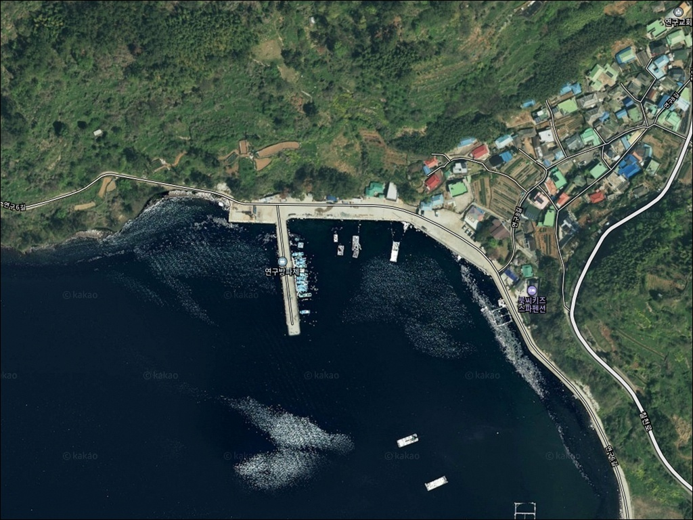
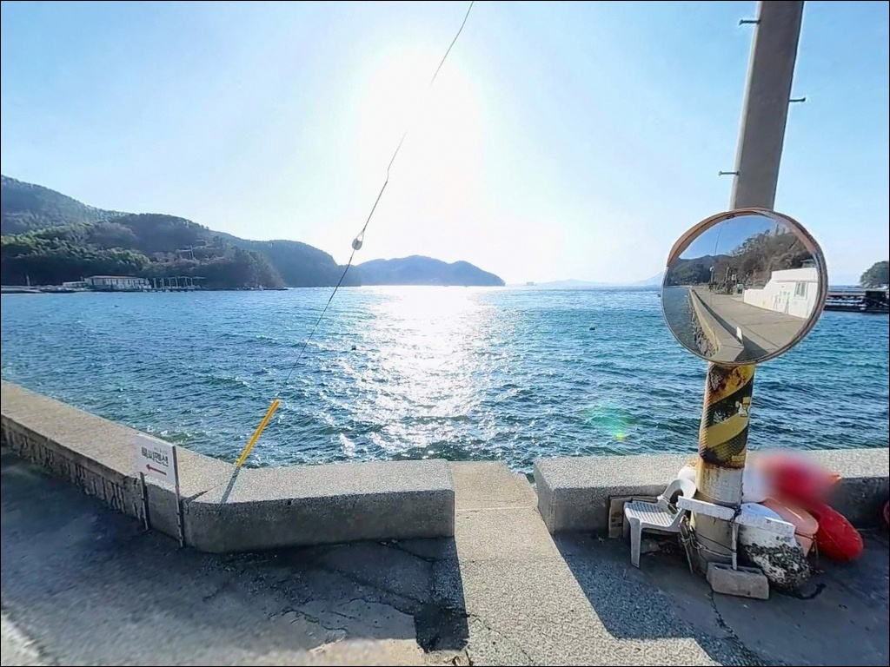
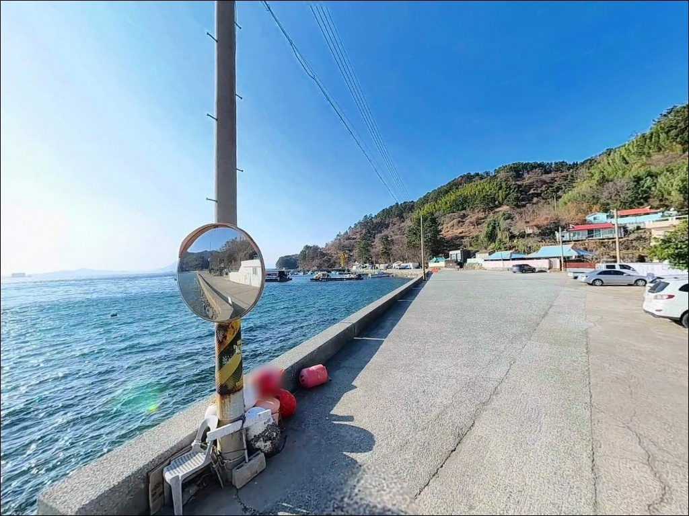
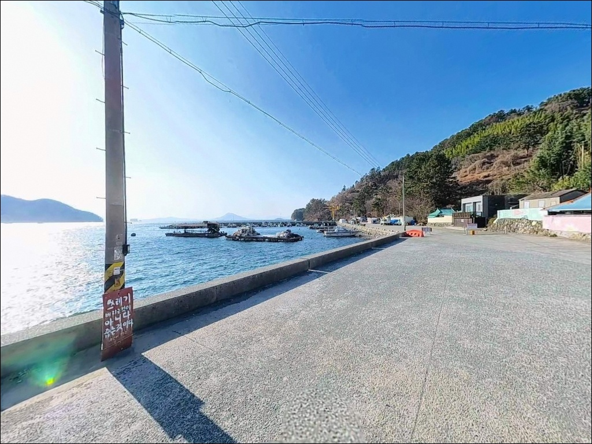
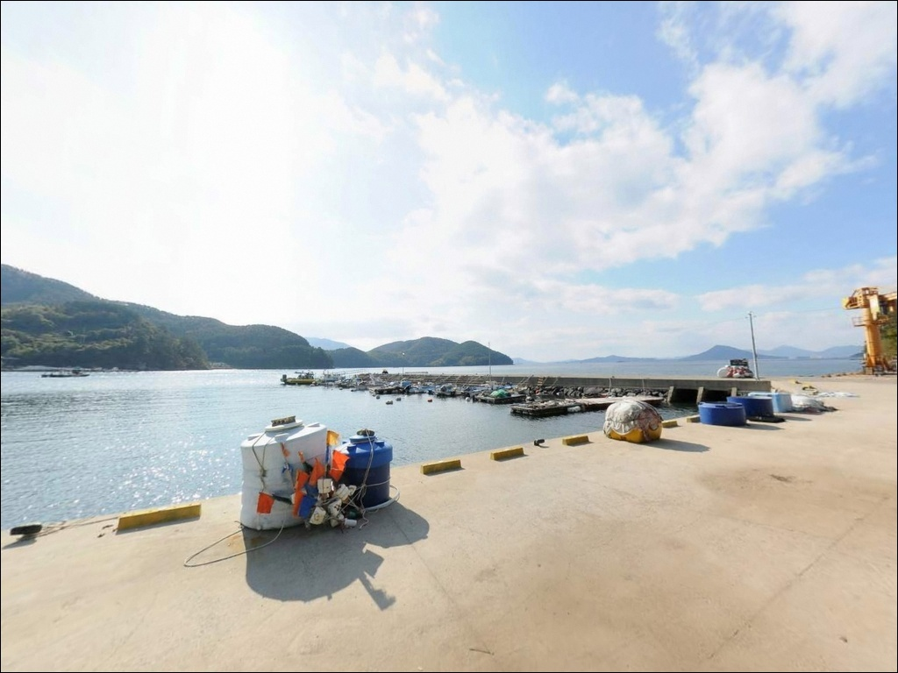
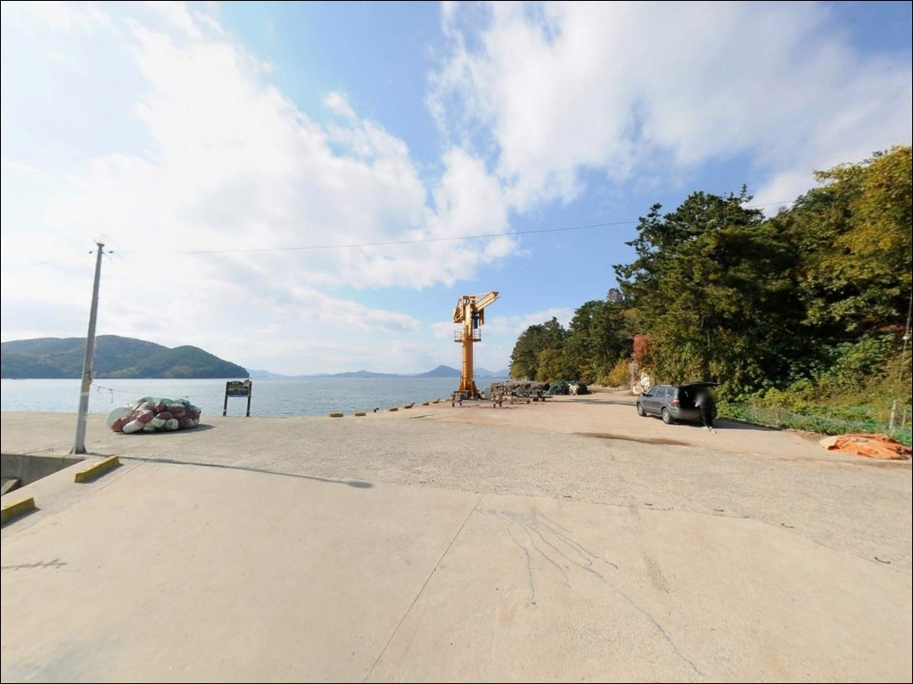
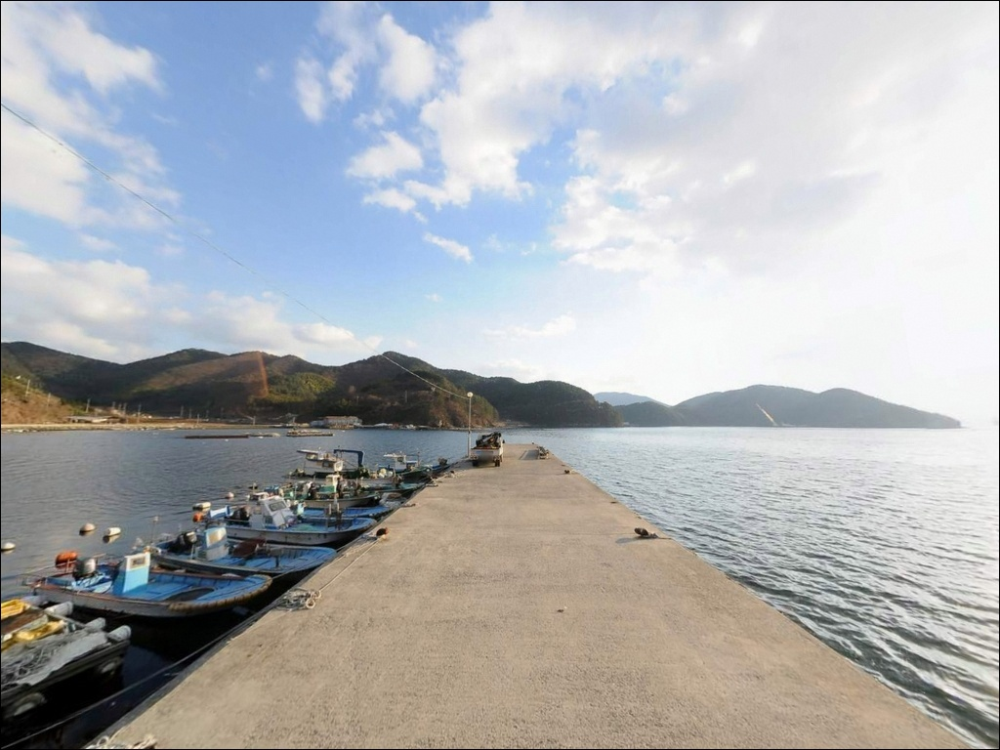
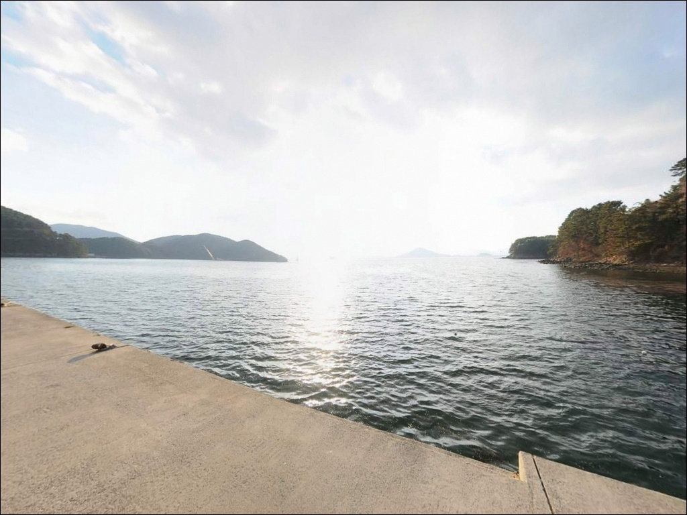
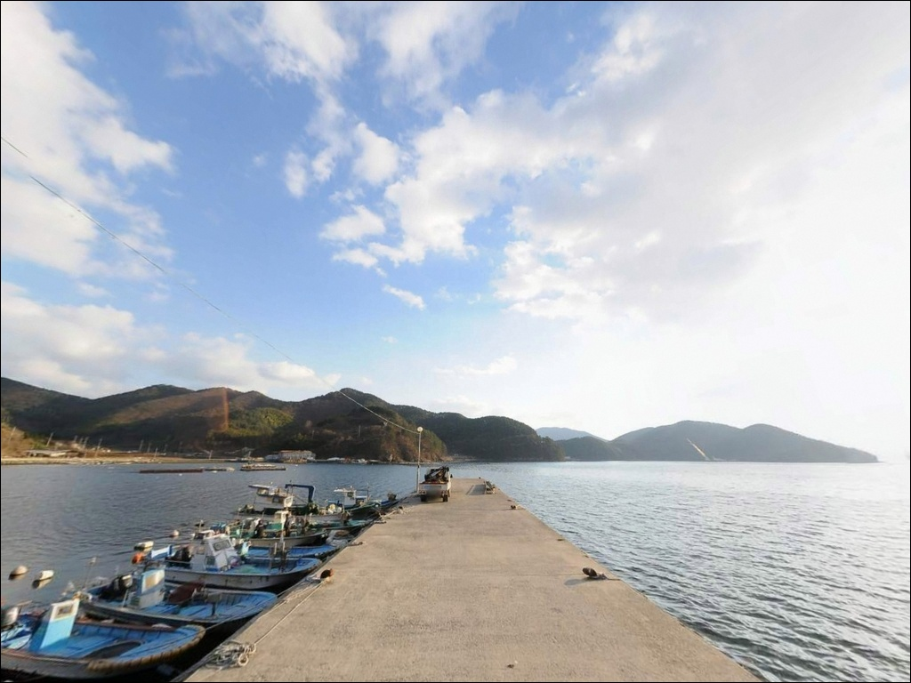

일몰 전 들어가야 자리 잡는 거제 연구방파제, 35호 봉돌에 살아난 야간 입질


포인트 안내
연구방파제
경남 거제시 하청면 연구리 550-13
여름과 가을 야간에 방파제 입구에 도착하면
주차 공간 5~7대가 이미 가득 찬 경우가 많습니다.
방파제 안으로 들어가면 1m 간격으로
낚시자가 줄지어 선 광경을 마주하게 됩니다.
자리 확보 실패가 곧 출조 실패로 이어지는
포인트입니다.
경남 거제시 하청면 연구리,
칠천도 연육교 인근 연구마을 앞에 자리한
연구방파제는 방파제 끝단 수심 10m 이상,
집어등이 가동되는 야간에
갈치·볼락·전갱이 반응이 살아나는
거제 북부권 대표 야간 낚시 방파제입니다.
이 글은 연구방파제의
진입 동선, 주차 여건, 야간 체류 조건,
낚시 방식별 공략 구간에 집중합니다.
조황 단정과 특정 어종 보장은
이 글의 범위에 포함되지 않습니다.

1. 진입 동선과 포인트 접근성
연구방파제로 향하는 진입로는
칠천로에서 연구마을 방면으로 내려가는
편도 1차로 마을 도로입니다.
비포장 구간이 일부 포함되어 있어
큰 짐을 싣거나 지상고가 낮은 차량은
미리 노면 상태를 확인하는 편이 좋습니다.
방파제 입구 주차 공간은
소형~중형 차량 기준 5~7대 수준입니다.
화장실에서 가장 가까운 1순위 주차 구역이며,
이곳이 차면 연구마을 회관 앞 공터에
추가로 2~3대가 더 들어가는 구조입니다.
회차는 방파제 입구 공간에서
백백으로 가능하지만
야간에는 주변 혼잡으로 여유가 없는 편입니다.
방파제 상단은 일자형 직선 구조이며
길이 약 80~100m 규모로,
중간에 단차 및 테트라포드 구간이 형성되어 있습니다.
끝단까지 도보 진입이 가능하고
외항 쪽으로 갈수록
조류 영향이 강해지고 수심도 깊어지는
구조입니다.

2. 차박 환경과 야간 체류 여건
연구방파제 인근은 야간 낚시자 밀집도가 높아
차박을 메인 목적으로 삼기에는 환경 조건이
넉넉하지 않습니다.
주차 공간 자체가 협소하고,
성수기 야간에는 인근 도로변까지
차량과 낚시자가 뒤섞이는 구조입니다.
연구마을은 민가 밀집도가 낮은 편이지만
방파제 가까이에 펜션이 2곳 이상 운영 중이어서
완전 고립된 분위기는 아닙니다.
집어등이 켜진 야간에는 방파제 주변이
밝은 편이라 차박보다는
낚시 후 당일 귀가하는 패턴이
이 포인트에 더 어울립니다.
낚시를 마친 뒤 인근에서 하룻밤 머물기를 원한다면
차박 커뮤니티에서 거제 북부권 노지 차박지로
함께 소개되는 황포해수욕장 방면을
대안으로 검토하는 편이 좋습니다.
방파제 자체 인근보다
공간 여유와 야간 환경이 안정적입니다.


3. 주변 편의시설 및 인프라 현황
방파제 입구에 공용 화장실이 설치되어 있습니다.
야간에도 이용 가능하며
현장 방문 시 상태를 먼저 확인하는 편이 좋습니다.
방파제 안으로 들어가기 전에
화장실 위치를 먼저 파악해두는 것이 기본입니다.
편의점은 칠천로 하청면 방면으로 이동하면
차량 5분 거리에 세븐일레븐이 있습니다.
식당은 연구마을 내 횟집 2곳이 운영 중이며
펜션 식당도 병행합니다.
주유소도 하청면 소재지 내에
차량 5분 이내 거리에 1곳이 있습니다.
응급 상황 발생 시
거제시보건소 하청분소까지 차량 10분 내외,
거제 고현동 대형 병원까지
20분 내 이동이 가능합니다.
야간 낚시 전 기본 구급약품은
출발 전 미리 챙겨두는 편이 좋습니다.

4. 야간 낚시 전 반드시 확인할 진입 조건
연구방파제는 야간 집어등 낚시 포인트로 알려진 곳입니다.
칠천량 해역의 조류는 생각보다 강한 편이어서
방파제 끝단에서 외항 쪽으로
채비가 빠르게 흘러내려가는 상황을
현장에서 자주 맞닥뜨리게 됩니다.
원투낚시라면 35호 이상의 봉돌을
준비해 두는 것이 손실을 줄이는 조건입니다.
방파제 끝단 테트라포드 구간은
내만 포인트임에도 조류 변화와
조석에 따라 미끄러운 구간이 생깁니다.
방수 안전화와 구명조끼는
야간 방파제 낚시의 기본 장비입니다.
방파제 중간 집어등 구간을 벗어나
끝단으로 갈수록 조명이 어두워지므로
헤드랜턴도 반드시 지참합니다.
기상특보가 발령된 날은
외항에 면한 방파제 끝단 진입을 삼갑니다.
마을 공동 작업 구역이기도 하므로
어선 이동 동선과 어구 위치를 확인하고
주차 후 어민 작업에 방해되지 않는
자리를 먼저 확인하는 것이 기본 매너입니다.
출조 전에 거제 연구방파제 인근 최신 조황을
검색해 보는 것이 좋습니다.

5. 지형 기반 낚시 여건 분석
연구방파제는 칠천도와 거제 본도 사이
좁은 수로인 칠천량을 마주 보는 위치에
돌출된 구조입니다.
이 지형이 방파제 외항 쪽으로
강한 조류 소통을 만들어내며,
방파제 끝단 기준 만조 시 수심 10m 이상이
형성되는 급심 구조입니다.
방파제 시작부는 수심 3~5m 수준이고
중간 단차 구간에서 6~8m로 깊어집니다.
바닥은 사질대와 수중 여가 섞인 구조로
저서어종의 서식 밀도가 높은 편이며,
방파제 외항 테트라포드 전 구간은
감성돔이 자리를 잡기 좋은
복합 지형 조건을 갖추고 있습니다.
방파제 전체에 집어등이 설치되어 있어
야간에는 표층~중층 활성도가 올라가는 구조입니다.
두족류와 야간 활성 어종이
집어등 주변으로 모이는 패턴이 형성되며,
이것이 이 방파제에서
야간 낚시 조과가 집중되는 이유입니다.
출조 전 거제 칠천도 방면 최신 조황을
반드시 검색해 보시기 바랍니다.


6. 연구방파제에서 조과를 높이는 낚시 스타일
이 포인트에서 가장 잘 맞는 스타일은
야간 집어등 주변을 활용하는
루어낚시와 에깅입니다.
집어등 불빛이 닿는 표층 경계면과
방파제 중간 단차 구간은
볼락·전갱이·갑오징어 반응이 살아나는
구간입니다.
겨울~초봄 야간에 두족류와 볼락 반응이
빠른 해역으로 알려져 있습니다.
찌낚시는 외항 테트라포드 전 구간이 감성돔 자리입니다.
조류가 거센 편이므로
1호 이상의 고부력 구멍찌나 막대찌 채비로
본류대를 공략하는 방식이 유효합니다.
가을철에는 씨알 있는 감성돔 조과가
외항 테트라 경계선에 집중되는 편입니다.
원투낚시는 방파제 끝단에서
칠천도 방향 수로를 향해 채비를 투척합니다.
붕장어, 도다리, 노래미가 주요 대상어이며
강한 조류에 채비가 밀려나지 않도록
35호 이상의 봉돌이 기본 준비물입니다.
조류가 죽는 정조 타이밍에
바닥층을 탐색하는 방식이 손실을 줄이는 조건입니다.

7. 대안 포인트와 플랜 B 동선
연구방파제가 만원이거나
주차 여건이 여의치 않을 때
가장 먼저 이동할 곳은
금곡마을 방파제입니다.
연구방파제에서 약 1.8km 거리로
동일 해역 조건을 공유하며,
외항 노출이 강해 갈치와 전어에
유리한 원투낚시 자리가 형성됩니다.
그다음 대안은 약 3km 거리의
옥계마을 방파제입니다.
내항 구조로 잔잔한 편이어서
찌낚시와 에깅으로
감성돔과 볼락을 노리기 좋은 구조입니다.
야간 낚시자가 상대적으로 적어
자리 확보에 여유가 있는 포인트입니다.
약 4km 거리의 유계항 방파제도
항 내 구조로 조용한 편이며
야간 볼락과 루어낚시에 활용할 수 있습니다.
차박 목적이라면 황포해수욕장 주차장(장목면 황포리)이
거제 북부권에서 차박 커뮤니티에
연구리와 함께 가장 자주 언급되는
대안 차박지입니다.

집어등 켜진 방파제에서
타이밍 하나가 조과를 가릅니다
야간 집어등 낚시를 즐기는 낚시인이라면
연구방파제의 지형 조건은
잘 맞는 구조입니다.
방파제 끝단 수심 10m 이상,
칠천량 조류 흐름,
전 구간에 설치된 집어등이
볼락·갈치·전갱이 반응을 끌어올리는
기반이 됩니다.
다만 성수기 야간에는 자리 경쟁이 심해
타이밍 판단 없이 늦은 시각에 도착하면
원하는 자리를 잡기 어렵습니다.
진입로 선확인, 주차 여건 파악,
해 지기 전 입장이라는
세 가지 조건을 갖추고 간다면
칠천량을 무대로 한 야간 낚시를
제대로 즐길 수 있는 포인트입니다.
낚시 후 당일 귀가가 어렵다면
인근 황포해수욕장 방면으로 이동해
차박 거점을 따로 잡고
새벽 조황을 노리는 방식도
이 권역에서 효율적인 동선입니다.